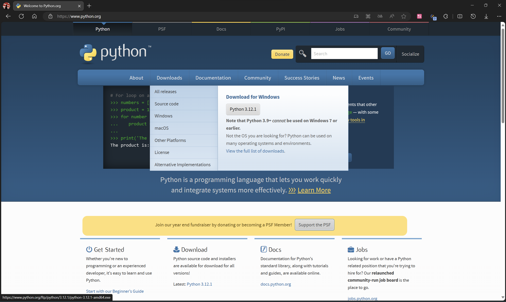
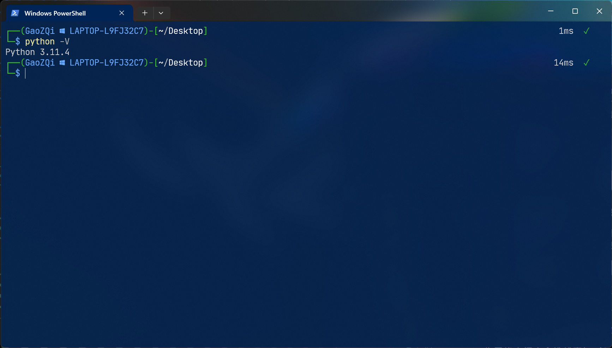
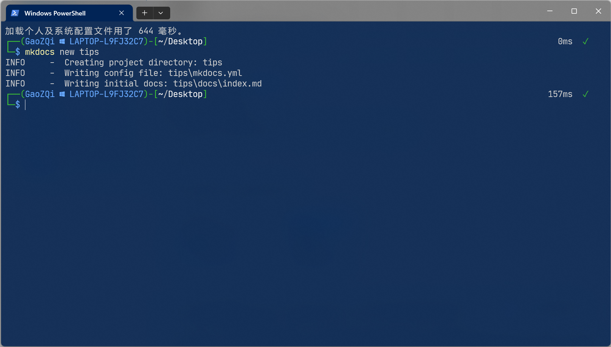
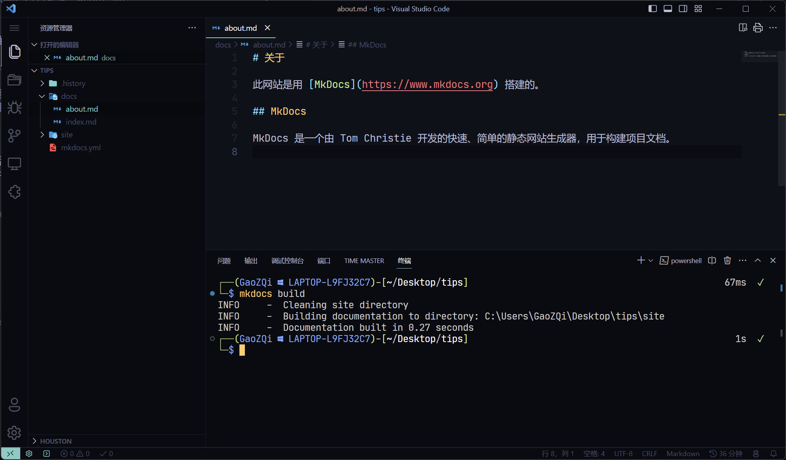
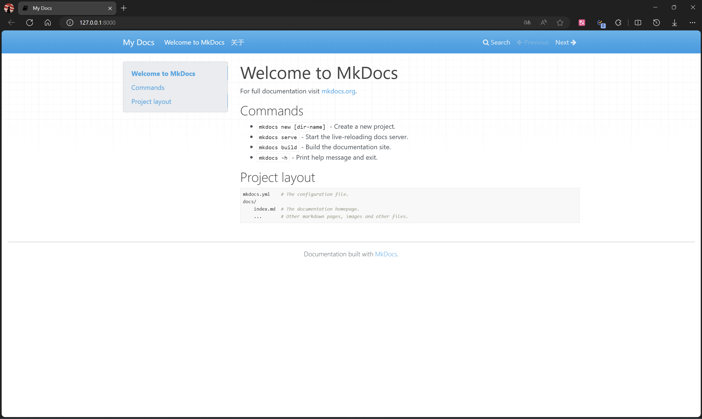

开始使用 Mkdocs 搭建个人网站☍
约 776 个字 35 行代码 预计阅读时间 6 分钟
参考文章和网站
前置知识
- Markdown 语法
- Python 的使用
- pip 换源
基础准备☍
在使用 Mkdocs 之前需要准备搜需要的环境和工具，下面的步骤均在 Windows 环境完成。
如果以及安装过相关环境和工具，可以跳过对应的步骤。
搭建 Python 环境☍
Mkdocs 是一个基于 Python 的工具，所以在使用之前需要先搭建 Python 环境。
下载 Python☍
通过浏览器访问Python官网，在 Downloads 选项卡中点击 "Download for Windows" 下方的的按钮下载 Python 。

安装Python☍
下载完成后运行文件，按照提示安装即可。

注意勾选下方的 "Add python.exe to PATH" ！
安装完毕后，在桌面右键打开终端输入下面的指令，查看 Python 版本。

如果显示了 Python 的版本号，则说明安装成功。
准备一款文字编辑器☍
在编写文档时，需要使用一款文字编辑器，这里推荐使用：
安装 Mkdocs☍
在终端中输入下面的指令，即可安装 Mkdocs。
如果遇到了网络问题，可以通过换源的方式解决。
搭建一个Mkdocs项目☍
创建新项目☍
选择你要存储项目的目录，然后运行下面的命令，即可新建一个空项目：

打开新生成的文件夹，可以看到创建的文件目录结构如下：
其中在docs文件夹中存放着所有文档的源文件（Markdown文件），例如其中的index.md文件就是默认的首页文件。
打开index.md文件，可以看到默认的内容如下：
# Welcome to MkDocs
For full documentation visit [mkdocs.org](https://www.mkdocs.org).
## Commands
* `mkdocs new [dir-name]` - Create a new project.
* `mkdocs serve` - Start the live-reloading docs server.
* `mkdocs build` - Build the documentation site.
* `mkdocs -h` - Print help message and exit.
## Project layout
mkdocs.yml # The configuration file.
docs/
index.md # The documentation homepage.
... # Other markdown pages, images and other files.
其中介绍了Mkdocs的官方文档和使用中会用到的基础指令以及项目的目录结构。
打开mkdocs.yml文件，可以看到默认的配置如下：
后续对网站的一些配置内容，都会添加在这个文件中具体详情可以参考官方介绍Mkdocs-配置。
添加页面☍
在docs文件夹中添加一个新的Markdown文件，例如about.md，然后在其中添加一些内容：
# 关于
此网站是用 [MkDocs](https://www.mkdocs.org) 搭建的。
## MkDocs
MkDocs 是一个由 Tom Christie 开发的快速、简单的静态网站生成器，用于构建项目文档。
编写完成后，保存文件，然后运行下面的命令，将写好的页面，构建成网站文件。

发现在目录下生成了一个site文件夹，其中存放着构建好的网站文件。
本地预览网站☍
在项目目录下运行下面的命令，即可在本地部署并启动一个网站预览服务。

提示
在运行本地部署命令mkdocs serve时会自动检测文件的变化，如果有变化则会自动重新构建网站文件，所以在编写文档时，可以在本地预览服务中实时查看效果。
通过浏览器访问http://127.0.0.1:8000/即可查看网站效果。

其中添加的about.md页面也已经显示在了导航栏中。

至此，一个简单的Mkdocs项目就搭建完成了。